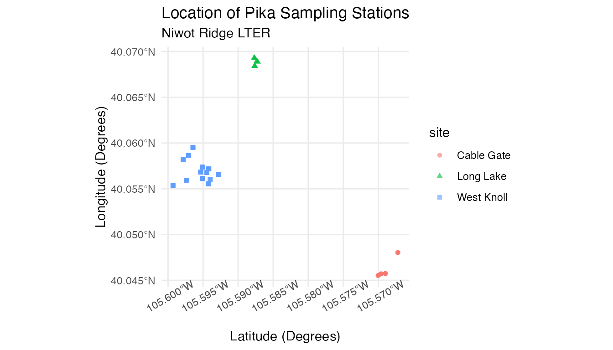
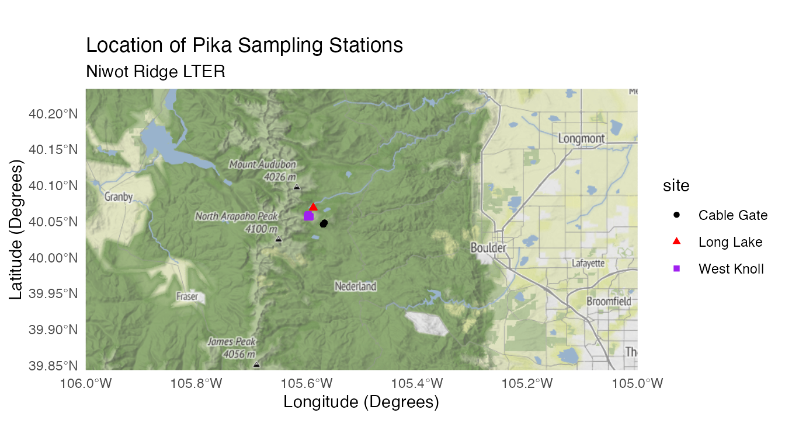

Niwot Ridge Pika Locations (NWT)
American Pika Locations in Summer 2018 at Niwot Ridge LTER
Source:vignettes/nwt_pikas_vignette.Rmd
nwt_pikas_vignette.RmdIntroduction
Researchers at the Niwot Ridge Long Term Ecological Research Site (NWT LTER) seek to study and monitor the health of the Colorado Rockies over time. Because of external factors like climate change, it’s more important than ever for scientists to understand how and why the Rockies are changing. Additionally, the well-being of the Rockies is crucial to local communities like Boulder, Colorado.

The American pika (Ochotona princeps) is a key species present at the NWT LTER. Despite their small size, pikas can be very informative about the health of the ecosystem. If pikas are more stressed, it can suggest that their habitat has declined in quality. As a result, the study of pikas is critical to the Colorado Rockies ecosystem.
Data Exploration
Let’s explore some stress data about pikas:
head(nwt_pikas)
#> # A tibble: 6 × 8
#> date site station utm_easting utm_northing sex concentration_p…
#> <date> <fct> <fct> <dbl> <dbl> <fct> <dbl>
#> 1 2018-06-08 Cable Gate Cable G… 451373 4432963 male 11563.
#> 2 2018-06-08 Cable Gate Cable G… 451411 4432985 male 10629.
#> 3 2018-06-08 Cable Gate Cable G… 451462 4432991 male 10924.
#> 4 2018-06-13 West Knoll West Kn… 449317 4434093 male 10414.
#> 5 2018-06-13 West Knoll West Kn… 449342 4434141 male 13531.
#> 6 2018-06-13 West Knoll West Kn… 449323 4434273 NA 7799.
#> # … with 1 more variable: elev_m <dbl>Not only do we have stress measurements, but the utm_easting and utm_northing columns also provide the geographic coordinates of the fecal pellet sampling stations where the pikas were found by researchers.
Geographical plotting can be helpful in our analyses. Generally speaking, it can offer a different perspective on our data and can also be easily understood by others. This is key; communicating results is an important part of data science.
Converting to Simple Features
To leverage the geospatial features of our data, we can use the sf package to transform the location information, currently stored in two columns, into information we can leverage for mapping and geospatial analysis. Using sf, we can represent our data as simple feature objects in R. As described in the sf package documentation, simple features is a set of standards for describing how geographical data should be expressed digitally. This will allow us to use our data with various other geographical frameworks and standards, like mapping packages, GIS software, and GDAL, all of which use the simple features standard. You can work with simple features like lines and polygons, but we’ll be working with point data.
First, we need to convert our current coordinates into an sf object. We can use the st_as_sf() function to do this:
pikas_sf <- st_as_sf(x = nwt_pikas, coords = c("utm_easting", "utm_northing"))
head(pikas_sf %>% select(geometry))
#> Simple feature collection with 6 features and 0 fields
#> Geometry type: POINT
#> Dimension: XY
#> Bounding box: xmin: 449317 ymin: 4432963 xmax: 451462 ymax: 4434273
#> CRS: NA
#> # A tibble: 6 × 1
#> geometry
#> <POINT>
#> 1 (451373 4432963)
#> 2 (451411 4432985)
#> 3 (451462 4432991)
#> 4 (449317 4434093)
#> 5 (449342 4434141)
#> 6 (449323 4434273)
st_crs(pikas_sf)
#> Coordinate Reference System: NACoordinate Reference Systems
We now have a geometry column consisting of points instead of two separate columns for our coordinates. However, there is still no Coordinate Reference System (CRS) associated with our points. A Coordinate Reference System describes several things about your data: how the Earth’s 3D surface is represented in a 2D form (spatial projection), how the Earth’s shape is modeled (datum), the units, and the axes (here for more).
From the data documentation (also known as metadata), which can be viewed by running ?nwt_pikas, we can see that our measurements use the Universal Transverse Mercator (UTM) system, are in Zone 13, and use the NAD83 datum. These all describe the CRS that our data uses.
We can set the coordinate reference system of the geometry column using st_set_crs(). This can be done in two ways. You can either use a string to describe the coordinate system using PROJ4 syntax:
pikas_sf <-
st_set_crs(pikas_sf, "+proj=utm +zone=13 +datum=NAD83 +units=m")Or you can use the equivalent EPSG code:
pikas_sf <- st_set_crs(pikas_sf, 26913)epsg.io can help you find the appropriate PROJ4 syntax and EPSG code for the appropriate coordinate system.
Reprojecting Coordinates
Online map tiles used as map background often use the WGS84 Web Mercator coordinate system (also used by the GPS system), which uses a geographic coordinate system (latitude and longitude). After setting our CRS, we can reproject our data to the WGS84 CRS using st_transform() so that it’s more compatible with third-party maps, which will give us more ways to represent our data:
PROJ4 Syntax:
pikas_sf <- st_transform(pikas_sf, "+proj=longlat +datum=WGS84")EPSG Code:
pikas_sf <- st_transform(pikas_sf, 4326)Plotting Points
Now, we can plot our new data using ggplot() and geom_sf().
pika_points <- ggplot(data = pikas_sf) +
geom_sf(aes(color = site, shape = site), alpha = 0.6) +
theme_minimal() +
labs(title = "Location of Pika Sampling Stations", subtitle = "Niwot Ridge LTER", x = "Latitude (Degrees)", y = "Longitude (Degrees)") +
theme(axis.text.x = element_text(angle = 30)) # Tilts x-axis text so that the labels don't overlap
pika_points
Because we reprojected our data, we can now plot our data onto geographic maps.
Incorporating Online Basemaps
Although it’s cool to see these plots, we still don’t have much geographical context for our data points, as we don’t know the finer details of the area. One way we can add this to our plots is through the use of the ggmap package. ggmap allows us to plot static maps from places like Google Maps and Stamen Maps. ggmap is also easy to use in conjunction with ggplot2, making it possible to combine our plots from earlier with any maps produced with ggmap. Dr. Melanie Frazier at NCEAS has produced a quick start guide for ggmap that can help you begin.
ggmap Terrain Maps
First, let’s try to plot the general area surrounding the Niwot Ridge LTER. We’ll use Stamen Maps since Google Maps requires users to register with Google to use their API. We need to create a bounding box consisting of the coordinates of the region that we would like to plot. This takes some trial and error, but OpenStreetMap can help you obtain the coordinates that you need.
nwt <- c(left = -106, bottom = 39.8433, right = -105, top = 40.2339)Next, we can use ggmap() and get_stamenmap() to plot our map. get_stamenmap() creates a ggmap raster object and is similar to the get_map(source = "stamen") function in the NCEAS quick start guide above. ggmap() will plot this ggmap raster object. We can specify the bbox argument as the nwt variable we defined earlier. The zoom argument determines the scale of the map, and will also take some trial and error to get right.
Now we can combine our ggmap() and our geom_sf() plots:
combined_map <- ggmap(get_stamenmap(nwt, zoom = 10, maptype = "terrain")) +
geom_sf(data = pikas_sf, inherit.aes = FALSE, aes(color = site, shape = site)) +
theme_minimal() +
labs(title = "Location of Pika Sampling Stations", subtitle = "Niwot Ridge LTER", x = "Longitude (Degrees)", y = "Latitude (Degrees)") +
scale_color_manual(values = c("black","red","purple")) # Choosing colors to make sure points are visible
combined_map
Finally, adjust the bounding box and zoom to get a better look:
pikas_location <- c(left = -105.65, bottom = 40.04, right = -105.55, top = 40.1)
pikas_map <- ggmap(get_stamenmap(pikas_location, zoom = 13, maptype = "terrain")) +
geom_sf(data = pikas_sf, inherit.aes = FALSE, aes(color = site, shape = site)) +
theme_minimal() +
labs(title = "Location of Pika Sampling Stations", subtitle = "Niwot Ridge LTER", x = "Longitude (Degrees)", y = "Latitude (Degrees)") +
scale_color_manual(values = c("black","red","purple")) # Choosing colors to make sure points are visible
pikas_map
Now we have a unified plot consisting of our data and a terrain map!
Learn more
Want to learn more about how iconic species, such as Pikas, help to create enthusiasm around citizen science? Read this story: https://lternet.edu/stories/pika-enthusiasts-unite-under-a-common-theme/
Citation
Whipple, A. and Niwot Ridge LTER. 2020. Physiological stress of American pika (Ochotona princeps) and associated habitat characteristics for Niwot Ridge, 2018 - 2019 ver 1. Environmental Data Initiative. https://doi.org/10.6073/pasta/9f95baf55f98732f47a8844821ff690d (Accessed 2021-05-06).
How we processed the raw data
Download the raw data from EDI.org
library(usethis)
library(metajam)
library(tidyverse)
library(janitor)
# Physiological stress of American pika (Ochotona princeps) and associated habitat characteristics for Niwot Ridge, 2018 - 2019
# Main URL: https://doi.org/10.6073/pasta/9f95baf55f98732f47a8844821ff690d
# Stress and coordinate data
nwt_url <-
"https://portal.edirepository.org/nis/dataviewer?packageid=knb-lter-nwt.268.1&entityid=43270add3532c7f3716404576cfb3f2c"
# Elevation Data
elevation_url <-
"https://portal.edirepository.org/nis/dataviewer?packageid=knb-lter-nwt.268.1&entityid=6a10b35988119d0462837f9bfa31dd2f"
# Download the data packages with metajam
nwt_download <-
download_d1_data(data_url = nwt_url, path = tempdir())
elevation_download <-
download_d1_data(data_url = elevation_url, path = tempdir())Data cleaning
# Read in stress and coordinate data
nwt_files <- read_d1_files(nwt_download)
nwt_pikas_raw <- nwt_files$data
# Drop unneeded variables, convert data types, spell out abbreviations, and reorder variables
nwt_pikas <- nwt_pikas_raw %>%
select(-Notes,-Vial,-Plate,-Biweek) %>%
mutate(
Station = as.factor(Station),
Site = as.factor(Site),
Sex = as.factor(Sex),
Date = as.Date(Date),
Site = recode(
Site,
"WK" = "West Knoll",
"LL" = "Long Lake",
"ML" = "Mitchell Lake",
"CG" = "Cable Gate"
),
Sex = recode(Sex,
"U" = NA_character_,
"M" = "male"),
Station = recode(
Station,
"CG1" = "Cable Gate 1",
"CG2" = "Cable Gate 2",
"CG3" = "Cable Gate 3",
"CG4" = "Cable Gate 4",
"LL1" = "Long Lake 1",
"LL2" = "Long Lake 2",
"LL3" = "Long Lake 3",
"WK1" = "West Knoll 1",
"WK2" = "West Knoll 2",
"WK3" = "West Knoll 3",
"WK4" = "West Knoll 4",
"WK5" = "West Knoll 5",
"WK6" = "West Knoll 6",
"WK7" = "West Knoll 7",
"WK8" = "West Knoll 8",
"WK9" = "West Knoll 9",
"WK10" = "West Knoll 10",
"WK11" = "West Knoll 11",
"WK12" = "West Knoll 12",
"WK13" = "West Knoll 13"
)
) %>%
relocate(Site, .before = Station) %>%
relocate(Sex, .before = Concentration_pg_g) %>%
clean_names()
# Read in elevation data
elevation_files <- read_d1_files(elevation_download)
elevation_raw <- elevation_files$data
# Select needed variables, spell out abbreviations, and convert Station to factor
elevation <- elevation_raw %>%
select(Station, Elev_M) %>%
mutate(
Station = recode(
Station,
"CG1" = "Cable Gate 1",
"CG2" = "Cable Gate 2",
"CG3" = "Cable Gate 3",
"CG4" = "Cable Gate 4",
"LL1" = "Long Lake 1",
"LL2" = "Long Lake 2",
"LL3" = "Long Lake 3",
"WK1" = "West Knoll 1",
"WK2" = "West Knoll 2",
"WK3" = "West Knoll 3",
"WK4" = "West Knoll 4",
"WK5" = "West Knoll 5",
"WK6" = "West Knoll 6",
"WK7" = "West Knoll 7",
"WK8" = "West Knoll 8",
"WK9" = "West Knoll 9",
"WK10" = "West Knoll 10",
"WK11" = "West Knoll 11",
"WK12" = "West Knoll 12",
"WK13" = "West Knoll 13"
),
Station = as.factor(Station)
) %>%
clean_names()
# Combine elevation data with stress and coordinate data
nwt_pikas <- nwt_pikas %>% full_join(elevation, by = "station")